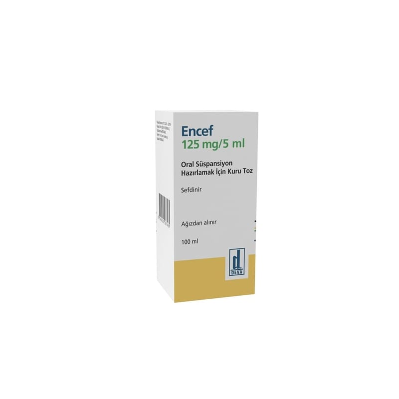

<!DOCTYPE html><html lang="tr"><head><meta charset="utf-8"><meta name="viewport" content="width=device-width,initial-scale=1"><meta name="referrer" content="strict-origin-when-cross-origin"><title>Encef 125 mg/5 ml Oral Süspansiyon İçin Kuru Toz, 60 ml – Kullanma Talimatı | İlaç Pro</title><meta name="description" content="ENCEF ağız yolu ile kullanılan ve sefalosporin olarak bilinen antibiyotik ilaç grubuna dahil olan sefdinir etkin…"><link rel="canonical" href="https://mustafayalvac244-tech.github.io/ilacpro-veri/ilac/8699525287458.html"><meta property="og:type" content="article"><meta property="og:locale" content="tr_TR"><meta property="og:title" content="Encef 125 mg/5 ml Oral Süspansiyon İçin Kuru Toz, 60 ml – Kullanma Talimatı"><meta property="og:description" content="ENCEF ağız yolu ile kullanılan ve sefalosporin olarak bilinen antibiyotik ilaç grubuna dahil olan sefdinir etkin…"><meta property="og:image" content="https://mustafayalvac244-tech.github.io/ilacpro-veri/gorsel/8699525287458.jpg"><meta property="og:image:width" content="800"><meta property="og:image:height" content="800"><meta property="og:image:type" content="image/jpeg"><meta property="og:url" content="https://mustafayalvac244-tech.github.io/ilacpro-veri/ilac/8699525287458.html"><link rel="stylesheet" href="_sayfa.css"></head><body data-id="6bedb129fe6e"><main><header>İlaç Pro · Kullanma Talimatı (TİTCK)</header><h1>Encef 125 mg/5 ml Oral Süspansiyon İçin Kuru Toz, 60 ml</h1><figure></figure><section id="nedir"><div class="bas"><h2>Ne için kullanılır</h2><small>KT · Bölüm 1</small></div><p>ENCEF ağız yolu ile kullanılan ve sefalosporin olarak bilinen antibiyotik ilaç grubuna dahil olan sefdinir etkin maddesini içermektedir. Sulandırıldıktan sonra her 5 ml’ sinde 125 mg sefdinir içeren ENCEF, polipropilen kapaklı 100 ml i aretli, 125 ml’lik iede veya 60 ml iaretli 75 ml’lik amber rengi cam ielerde, içerisinde 5 ml’lik ölçek ka ığı ve kullanma talimatının da yer aldığı karton kutuda takdim edilmektedir.</p><p>Bu ilacı kullanmaya balamadan önce bu KULLANMA TALĐMATINI dikkatlice okuyunuz, çünkü sizin için önemli bilgiler içermektedir.
• Bu kullanma talimatını saklayınız. Daha sonra tekrar okumaya ihtiyaç duyabilirsiniz.
• Eğer ilave sorularınız olursa, lütfen doktorunuza veya eczacınıza danıınız.
• Bu ilaç kiisel olarak sizin için reçete edilmitir, bakalarına vermeyiniz.
• Bu ilacın kullanımı sırasında, doktora veya hastaneye gittiğinizde doktorunuza bu ilacı kullandığınızı söyleyiniz.
• Bu talimatta yazılanlara aynen uyunuz. Đlaç hakkında size önerilen dozun dıında yüksek veya düük doz kullanmayınız.</p><p>ENCEF bakterilerin (mikropların) neden olduğu aağıdaki enfeksiyonların (iltihap oluturan mikrobik hastalık) tedavisinde kullanılır.
• Akut bakteriyel otitis media (orta kulak iltihabı)
• Akut maksiller sinüzit (yüz kemiklerinin içindeki hava bo luklarının iltihabı)
• Akut bakteriyel rinosinüzit (burun ve sinüslerin iltihabı)
• Tonsillit (bademcik iltihabı)
• Farenjit (yutak/farinks iltihabı)
• Bazı deri enfeksiyonları (iltihapları).</p></section><div id="kt"></div></main><footer><p>Kaynak: <a id="pdf" href="https://titck.gov.tr/storage/kubKtAttachments/bfd003dd98402.pdf" rel="noopener">TİTCK Kullanma Talimatı</a> · onay 01.12.2011</p><p>Bu sayfa yorum içermez; metin Kullanma Talimatı'ndan olduğu gibi alınmıştır.</p><p>İlaç Pro tıbbi tavsiye vermez, tanı koymaz, doz önermez ve bir tıbbi cihaz değildir. Kullanma Talimatı metinleri TİTCK'dan olduğu gibi aktarılır. İlaç kullanımıyla ilgili kararlar için doktorunuza veya eczacınıza danışın.</p></footer><nav><a class="btn b1" id="ac" href="ilacpro://ilac/8699525287458">Uygulamada aç</a><a class="btn b2" id="indir" href="../indir/">İlaç Pro'yu indir</a></nav><script src="_sayfa.js" defer></script></body></html>